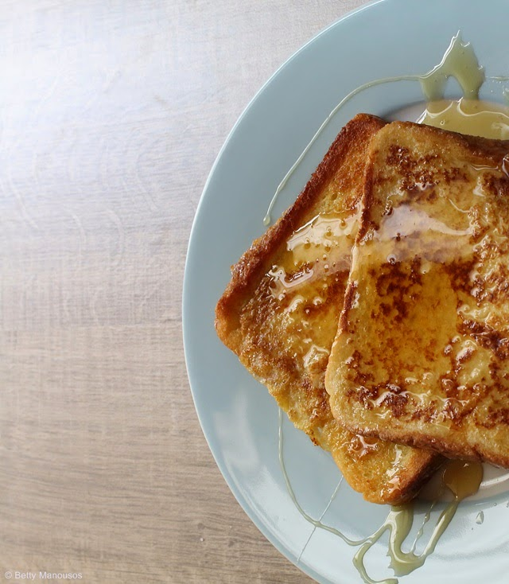

French Toast Recipe

Simple delicacy French Toast
Ingredients
- 2/3 cup milk
- 2 large eggs
- 1 teaspoon vanilla extract (optional)
- 1/4 teaspoon ground cinnamon (optional)
- Salt (for taste)
- 6 thick slices of bread
- 1 tablespoon of unsalted butter or more if needed
Steps
- Gather all ingredients
-
Whisk milk, eggs, vanilla, cinnamon, and salt together in a shallow
bowl.
-
Lightly butter a griddle or skillet and heat over medium-high heat.
- Dunk bread in the egg mixture, soaking both sides.
-
Transfer to the hot skillet and cook until golden, 3 to 4 minutes per
side.
- Serve hot.